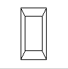

Look at the image on the cover of this book. The program that produced that image contained a single geometric description of a building block. Each block was carefully positioned in the scene: Some blocks were scattered on the floor, some were stacked on top of each other on the table, and some were assembled to make the globe. Also, a particular viewpoint had to be chosen. Obviously, we wanted to look at the corner of the room containing the globe. But how far away from the scene - and where exactly - should the viewer be? We wanted to make sure that the final image of the scene contained a good view out the window, that a portion of the floor was visible, and that all the objects in the scene were not only visible but presented in an interesting arrangement. This chapter explains how to use OpenGL to accomplish these tasks: how to position and orient models in three-dimensional space and how to establish the location - also in three-dimensional space - of the viewpoint. All of these factors help determine exactly what image appears on the screen.
You want to remember that the point of computer graphics is to create a two-dimensional image of three-dimensional objects (it has to be two-dimensional because it's drawn on a flat screen), but you need to think in three-dimensional coordinates while making many of the decisions that determine what gets drawn on the screen. A common mistake people make when creating three-dimensional graphics is to start thinking too soon that the final image appears on a flat, two-dimensional screen. Avoid thinking about which pixels need to be drawn, and instead try to visualize three-dimensional space. Create your models in some three-dimensional universe that lies deep inside your computer, and let the computer do its job of calculating which pixels to color.
A series of three computer operations convert an object's three-dimensional coordinates to pixel positions on the screen.
This chapter describes all of these operations, and how to control them, in the following major sections:
A Simple Example: Drawing a Cube
Example 3-1 draws a cube that's scaled by a modeling transformation (see Figure 3-3). The viewing transformation, gluLookAt(), positions and aims the camera towards where the cube is drawn. A projection transformation and a viewport transformation are also specified. The rest of this section walks you through Example 3-1 and briefly explains the transformation commands it uses. The succeeding sections contain the complete, detailed discussion of all OpenGL's transformation commands.

Figure 3-3 : Transformed Cube
Example 3-1 : Transformed Cube: cube.c
#include <GL/gl.h>
#include <GL/glu.h>
#include <GL/glut.h>
void init(void)
{
glClearColor (0.0, 0.0, 0.0, 0.0);
glShadeModel (GL_FLAT);
}
void display(void)
{
glClear (GL_COLOR_BUFFER_BIT);
glColor3f (1.0, 1.0, 1.0);
glLoadIdentity (); /* clear the matrix */
/* viewing transformation */
gluLookAt (0.0, 0.0, 5.0, 0.0, 0.0, 0.0, 0.0, 1.0, 0.0);
glScalef (1.0, 2.0, 1.0); /* modeling transformation */
glutWireCube (1.0);
glFlush ();
}
void reshape (int w, int h)
{
glViewport (0, 0, (GLsizei) w, (GLsizei) h);
glMatrixMode (GL_PROJECTION);
glLoadIdentity ();
glFrustum (-1.0, 1.0, -1.0, 1.0, 1.5, 20.0);
glMatrixMode (GL_MODELVIEW);
}
int main(int argc, char** argv)
{
glutInit(&argc, argv);
glutInitDisplayMode (GLUT_SINGLE | GLUT_RGB);
glutInitWindowSize (500, 500);
glutInitWindowPosition (100, 100);
glutCreateWindow (argv[0]);
init ();
glutDisplayFunc(display);
glutReshapeFunc(reshape);
glutMainLoop();
return 0;
}
The Viewing Transformation
Recall that the viewing transformation is analogous to positioning and aiming a camera. In this code example, before the viewing transformation can be specified, the current matrix is set to the identity matrix with glLoadIdentity(). This step is necessary since most of the transformation commands multiply the current matrix by the specified matrix and then set the result to be the current matrix. If you don't clear the current matrix by loading it with the identity matrix, you continue to combine previous transformation matrices with the new one you supply. In some cases, you do want to perform such combinations, but you also need to clear the matrix sometimes.
In Example 3-1, after the matrix is initialized, the viewing transformation is specified with gluLookAt(). The arguments for this command indicate where the camera (or eye position) is placed, where it is aimed, and which way is up. The arguments used here place the camera at (0, 0, 5), aim the camera lens towards (0, 0, 0), and specify the up-vector as (0, 1, 0). The up-vector defines a unique orientation for the camera.
If gluLookAt() was not called, the camera has a default position and orientation. By default, the camera is situated at the origin, points down the negative z-axis, and has an up-vector of (0, 1, 0). So in Example 3-1, the overall effect is that gluLookAt() moves the camera 5 units along the z-axis. (See "Viewing and Modeling Transformations" for more information about viewing transformations.)
The Modeling Transformation
You use the modeling transformation to position and orient the model. For example, you can rotate, translate, or scale the model - or perform some combination of these operations. In Example 3-1, glScalef() is the modeling transformation that is used. The arguments for this command specify how scaling should occur along the three axes. If all the arguments are 1.0, this command has no effect. In Example 3-1, the cube is drawn twice as large in the y direction. Thus, if one corner of the cube had originally been at (3.0, 3.0, 3.0), that corner would wind up being drawn at (3.0, 6.0, 3.0). The effect of this modeling transformation is to transform the cube so that it isn't a cube but a rectangular box.
Try This
Change the gluLookAt() call in Example 3-1 to the modeling transformation glTranslatef() with parameters (0.0, 0.0, -5.0). The result should look exactly the same as when you used gluLookAt(). Why are the effects of these two commands similar?
Note that instead of moving the camera (with a viewing transformation) so that the cube could be viewed, you could have moved the cube away from the camera (with a modeling transformation). This duality in the nature of viewing and modeling transformations is why you need to think about the effect of both types of transformations simultaneously. It doesn't make sense to try to separate the effects, but sometimes it's easier to think about them one way rather than the other. This is also why modeling and viewing transformations are combined into the modelview matrix before the transformations are applied. (See "Viewing and Modeling Transformations" for more detail on how to think about modeling and viewing transformations and how to specify them to get the result you want.)
Also note that the modeling and viewing transformations are included in the display() routine, along with the call that's used to draw the cube, glutWireCube(). This way, display() can be used repeatedly to draw the contents of the window if, for example, the window is moved or uncovered, and you've ensured that each time, the cube is drawn in the desired way, with the appropriate transformations. The potential repeated use of display() underscores the need to load the identity matrix before performing the viewing and modeling transformations, especially when other transformations might be performed between calls to display().
The Projection Transformation
Specifying the projection transformation is like choosing a lens for a camera. You can think of this transformation as determining what the field of view or viewing volume is and therefore what objects are inside it and to some extent how they look. This is equivalent to choosing among wide-angle, normal, and telephoto lenses, for example. With a wide-angle lens, you can include a wider scene in the final photograph than with a telephoto lens, but a telephoto lens allows you to photograph objects as though they're closer to you than they actually are. In computer graphics, you don't have to pay $10,000 for a 2000-millimeter telephoto lens; once you've bought your graphics workstation, all you need to do is use a smaller number for your field of view.
In addition to the field-of-view considerations, the projection transformation determines how objects are projected onto the screen, as its name suggests. Two basic types of projections are provided for you by OpenGL, along with several corresponding commands for describing the relevant parameters in different ways. One type is the perspective projection, which matches how you see things in daily life. Perspective makes objects that are farther away appear smaller; for example, it makes railroad tracks appear to converge in the distance. If you're trying to make realistic pictures, you'll want to choose perspective projection, which is specified with the glFrustum() command in this code example.
The other type of projection is orthographic, which maps objects directly onto the screen without affecting their relative size. Orthographic projection is used in architectural and computer-aided design applications where the final image needs to reflect the measurements of objects rather than how they might look. Architects create perspective drawings to show how particular buildings or interior spaces look when viewed from various vantage points; the need for orthographic projection arises when blueprint plans or elevations are generated, which are used in the construction of buildings. (See "Projection Transformations" for a discussion of ways to specify both kinds of projection transformations.)
Before glFrustum() can be called to set the projection transformation, some preparation needs to happen. As shown in the reshape() routine in Example 3-1, the command called glMatrixMode() is used first, with the argument GL_PROJECTION. This indicates that the current matrix specifies the projection transformation; the following transformation calls then affect the projection matrix. As you can see, a few lines later glMatrixMode() is called again, this time with GL_MODELVIEW as the argument. This indicates that succeeding transformations now affect the modelview matrix instead of the projection matrix. (See "Manipulating the Matrix Stacks" for more information about how to control the projection and modelview matrices.)
Note that glLoadIdentity() is used to initialize the current projection matrix so that only the specified projection transformation has an effect. Now glFrustum() can be called, with arguments that define the parameters of the projection transformation. In this example, both the projection transformation and the viewport transformation are contained in the reshape() routine, which is called when the window is first created and whenever the window is moved or reshaped. This makes sense, since both projecting (the width to height aspect ratio of the projection viewing volume) and applying the viewport relate directly to the screen, and specifically to the size or aspect ratio of the window on the screen.
Try This
Change the glFrustum() call in Example 3-1 to the more commonly used Utility Library routine gluPerspective() with parameters (60.0, 1.0, 1.5, 20.0). Then experiment with different values, especially for fovy and aspect.
The Viewport Transformation
Together, the projection transformation and the viewport transformation determine how a scene gets mapped onto the computer screen. The projection transformation specifies the mechanics of how the mapping should occur, and the viewport indicates the shape of the available screen area into which the scene is mapped. Since the viewport specifies the region the image occupies on the computer screen, you can think of the viewport transformation as defining the size and location of the final processed photograph - for example, whether the photograph should be enlarged or shrunk.
The arguments to glViewport() describe the origin of the available screen space within the window - (0, 0) in this example - and the width and height of the available screen area, all measured in pixels on the screen. This is why this command needs to be called within reshape() - if the window changes size, the viewport needs to change accordingly. Note that the width and height are specified using the actual width and height of the window; often, you want to specify the viewport this way rather than giving an absolute size. (See "Viewport Transformation" for more information about how to define the viewport.)
Drawing the Scene
Once all the necessary transformations have been specified, you can draw the scene (that is, take the photograph). As the scene is drawn, OpenGL transforms each vertex of every object in the scene by the modeling and viewing transformations. Each vertex is then transformed as specified by the projection transformation and clipped if it lies outside the viewing volume described by the projection transformation. Finally, the remaining transformed vertices are divided by w and mapped onto the viewport.
General-Purpose Transformation Commands
This section discusses some OpenGL commands that you might find useful as you specify desired transformations. You've already seen a couple of these commands, glMatrixMode() and glLoadIdentity(). The other two commands described here - glLoadMatrix*() and glMultMatrix*() - allow you to specify any transformation matrix directly and then to multiply the current matrix by that specified matrix. More specific transformation commands - such as gluLookAt() and glScale*() - are described in later sections.
As described in the preceding section, you need to state whether you want to modify the modelview or projection matrix before supplying a transformation command. You choose the matrix with glMatrixMode(). When you use nested sets of OpenGL commands that might be called repeatedly, remember to reset the matrix mode correctly. (The glMatrixMode() command can also be used to indicate the texture matrix; texturing is discussed in detail in "The Texture Matrix Stack" in Chapter 9.)
- void glMatrixMode(GLenum
mode);
Specifies whether the modelview, projection, or texture matrix will be modified, using the argument GL_MODELVIEW, GL_PROJECTION, or GL_TEXTURE for mode. Subsequent transformation commands affect the specified matrix. Note that only one matrix can be modified at a time. By default, the modelview matrix is the one that's modifiable, and all three matrices contain the identity matrix.
You use the glLoadIdentity() command to clear the currently modifiable matrix for future transformation commands, since these commands modify the current matrix. Typically, you always call this command before specifying projection or viewing transformations, but you might also call it before specifying a modeling transformation.
- void glLoadIdentity(void);
- Sets the currently modifiable matrix to the 4 ´
4 identity matrix.
If you want to specify explicitly a particular matrix to be loaded as the current matrix, use glLoadMatrix*(). Similarly, use glMultMatrix*() to multiply the current matrix by the matrix passed in as an argument. The argument for both these commands is a vector of sixteen values (m1, m2, ... , m16) that specifies a matrix M as follows:
Remember that you might be able to maximize efficiency by using display lists to store frequently used matrices (and their inverses) rather than recomputing them. (See "Display-List Design Philosophy" in Chapter 7.) (OpenGL implementations often must compute the inverse of the modelview matrix so that normals and clipping planes can be correctly transformed to eye coordinates.)
Caution: If you're programming in C and you declare a matrix as m[4][4], then the element m[i][j] is in the ith column and jth row of the OpenGL transformation matrix. This is the reverse of the standard C convention in which m[i][j] is in row i and column j. To avoid confusion, you should declare your matrices as m[16].
- void glLoadMatrix{fd}(const
TYPE *m);
Sets the sixteen values of the current matrix to those specified by m.
void glMultMatrix{fd}(const TYPE *m);
Multiplies the matrix specified by the sixteen values pointed to by m by the current matrix and stores the result as the current matrix.
Note: All matrix multiplication with OpenGL occurs as follows: Suppose the current matrix is C and the matrix specified with glMultMatrix*() or any of the transformation commands is M. After multiplication, the final matrix is always CM. Since matrix multiplication isn't generally commutative, the order makes a difference.
Viewing and Modeling Transformations
Viewing and modeling transformations are inextricably related in OpenGL and are in fact combined into a single modelview matrix. (See "A Simple Example: Drawing a Cube.") One of the toughest problems newcomers to computer graphics face is understanding the effects of combined three-dimensional transformations. As you've already seen, there are alternative ways to think about transformations - do you want to move the camera in one direction, or move the object in the opposite direction? Each way of thinking about transformations has advantages and disadvantages, but in some cases one way more naturally matches the effect of the intended transformation. If you can find a natural approach for your particular application, it's easier to visualize the necessary transformations and then write the corresponding code to specify the matrix manipulations. The first part of this section discusses how to think about transformations; later, specific commands are presented. For now, we use only the matrix-manipulation commands you've already seen. Finally, keep in mind that you must call glMatrixMode() with GL_MODELVIEW as its argument prior to performing modeling or viewing transformations.
Thinking about Transformations
Let's start with a simple case of two transformations: a 45-degree counterclockwise rotation about the origin around the z-axis, and a translation down the x-axis. Suppose that the object you're drawing is small compared to the translation (so that you can see the effect of the translation), and that it's originally located at the origin. If you rotate the object first and then translate it, the rotated object appears on the x-axis. If you translate it down the x-axis first, however, and then rotate about the origin, the object is on the line y=x, as shown in Figure 3-4. In general, the order of transformations is critical. If you do transformation A and then transformation B, you almost always get something different than if you do them in the opposite order.

Figure 3-4 : Rotating First or Translating First
Now let's talk about the order in which you specify a series of transformations. All viewing and modeling transformations are represented as 4 ´
4 matrices. Each successive glMultMatrix*() or transformation command multiplies a new 4 ´
4 matrix M by the current modelview matrix C to yield CM. Finally, vertices v are multiplied by the current modelview matrix. This process means that the last transformation command called in your program is actually the first one applied to the vertices: CMv. Thus, one way of looking at it is to say that you have to specify the matrices in the reverse order. Like many other things, however, once you've gotten used to thinking about this correctly, backward will seem like forward.
Consider the following code sequence, which draws a single point using three transformations:
glMatrixMode(GL_MODELVIEW);
glLoadIdentity();
glMultMatrixf(N); /* apply transformation N */
glMultMatrixf(M); /* apply transformation M */
glMultMatrixf(L); /* apply transformation L */
glBegin(GL_POINTS);
glVertex3f(v); /* draw transformed vertex v */
glEnd();
With this code, the modelview matrix successively contains I, N, NM, and finally NML, where I represents the identity matrix. The transformed vertex is NMLv. Thus, the vertex transformation is N(M(Lv)) - that is, v is multiplied first by L, the resulting Lv is multiplied by M, and the resulting MLv is multiplied by N. Notice that the transformations to vertex v effectively occur in the opposite order than they were specified. (Actually, only a single multiplication of a vertex by the modelview matrix occurs; in this example, the N, M, and L matrices are already multiplied into a single matrix before it's applied to v.)
Grand, Fixed Coordinate System
Thus, if you like to think in terms of a grand, fixed coordinate system - in which matrix multiplications affect the position, orientation, and scaling of your model - you have to think of the multiplications as occurring in the opposite order from how they appear in the code. Using the simple example shown on the left side of Figure 3-4 (a rotation about the origin and a translation along the x-axis), if you want the object to appear on the axis after the operations, the rotation must occur first, followed by the translation. To do this, you'll need to reverse the order of operations, so the code looks something like this (where R is the rotation matrix and T is the translation matrix):
glMatrixMode(GL_MODELVIEW);
glLoadIdentity();
glMultMatrixf(T); /* translation */
glMultMatrixf(R); /* rotation */
draw_the_object();
Moving a Local Coordinate System
Another way to view matrix multiplications is to forget about a grand, fixed coordinate system in which your model is transformed and instead imagine that a local coordinate system is tied to the object you're drawing. All operations occur relative to this changing coordinate system. With this approach, the matrix multiplications now appear in the natural order in the code. (Regardless of which analogy you're using, the code is the same, but how you think about it differs.) To see this in the translation-rotation example, begin by visualizing the object with a coordinate system tied to it. The translation operation moves the object and its coordinate system down the x-axis. Then, the rotation occurs about the (now-translated) origin, so the object rotates in place in its position on the axis.
This approach is what you should use for applications such as articulated robot arms, where there are joints at the shoulder, elbow, and wrist, and on each of the fingers. To figure out where the tips of the fingers go relative to the body, you'd like to start at the shoulder, go down to the wrist, and so on, applying the appropriate rotations and translations at each joint. Thinking about it in reverse would be far more confusing.
This second approach can be problematic, however, in cases where scaling occurs, and especially so when the scaling is nonuniform (scaling different amounts along the different axes). After uniform scaling, translations move a vertex by a multiple of what they did before, since the coordinate system is stretched. Nonuniform scaling mixed with rotations may make the axes of the local coordinate system nonperpendicular.
As mentioned earlier, you normally issue viewing transformation commands in your program before any modeling transformations. This way, a vertex in a model is first transformed into the desired orientation and then transformed by the viewing operation. Since the matrix multiplications must be specified in reverse order, the viewing commands need to come first. Note, however, that you don't need to specify either viewing or modeling transformations if you're satisfied with the default conditions. If there's no viewing transformation, the "camera" is left in the default position at the origin, pointed toward the negative z-axis; if there's no modeling transformation, the model isn't moved, and it retains its specified position, orientation, and size.
Since the commands for performing modeling transformations can be used to perform viewing transformations, modeling transformations are discussed first, even if viewing transformations are actually issued first. This order for discussion also matches the way many programmers think when planning their code: Often, they write all the code necessary to compose the scene, which involves transformations to position and orient objects correctly relative to each other. Next, they decide where they want the viewpoint to be relative to the scene they've composed, and then they write the viewing transformations accordingly.
Modeling Transformations
The three OpenGL routines for modeling transformations are glTranslate*(), glRotate*(), and glScale*(). As you might suspect, these routines transform an object (or coordinate system, if you're thinking of it that way) by moving, rotating, stretching, shrinking, or reflecting it. All three commands are equivalent to producing an appropriate translation, rotation, or scaling matrix, and then calling glMultMatrix*() with that matrix as the argument. However, these three routines might be faster than using glMultMatrix*(). OpenGL automatically computes the matrices for you. (See Appendix F if you're interested in the details.)
In the command summaries that follow, each matrix multiplication is described in terms of what it does to the vertices of a geometric object using the fixed coordinate system approach, and in terms of what it does to the local coordinate system that's attached to an object.
Translate
- void glTranslate{fd}(
TYPEx, TYPE y, TYPEz);
Multiplies the current matrix by a matrix that moves (translates) an object by the given x, y, and z values (or moves the local coordinate system by the same amounts).
Figure 3-5 shows the effect of glTranslate*().
Figure 3-5 : Translating an Object
Note that using (0.0, 0.0, 0.0) as the argument for glTranslate*() is the identity operation - that is, it has no effect on an object or its local coordinate system.
Rotate
- void glRotate{fd}(TYPE
angle, TYPE x, TYPE y, TYPE z);
Multiplies the current matrix by a matrix that rotates an object (or the local coordinate system) in a counterclockwise direction about the ray from the origin through the point (x, y, z). The angle parameter specifies the angle of rotation in degrees.
The effect of glRotatef(45.0, 0.0, 0.0, 1.0), which is a rotation of 45 degrees about the z-axis, is shown in Figure 3-6.
Figure 3-6 : Rotating an Object
Note that an object that lies farther from the axis of rotation is more dramatically rotated (has a larger orbit) than an object drawn near the axis. Also, if the angle argument is zero, the glRotate*() command has no effect.
Scale
- void glScale{fd}(
TYPEx, TYPE y, TYPEz);
Multiplies the current matrix by a matrix that stretches, shrinks, or reflects an object along the axes. Each x, y, and z coordinate of every point in the object is multiplied by the corresponding argument x, y, or z. With the local coordinate system approach, the local coordinate axes are stretched, shrunk, or reflected by the x, y, and z factors, and the associated object is transformed with them.
Figure 3-7 shows the effect of glScalef(2.0, -0.5, 1.0).
Figure 3-7 : Scaling and Reflecting an Object
glScale*() is the only one of the three modeling transformations that changes the apparent size of an object: Scaling with values greater than 1.0 stretches an object, and using values less than 1.0 shrinks it. Scaling with a -1.0 value reflects an object across an axis. The identity values for scaling are (1.0, 1.0, 1.0). In general, you should limit your use of glScale*() to those cases where it is necessary. Using glScale*() decreases the performance of lighting calculations, because the normal vectors have to be renormalized after transformation.
Note: A scale value of zero collapses all object coordinates along that axis to zero. It's usually not a good idea to do this, because such an operation cannot be undone. Mathematically speaking, the matrix cannot be inverted, and inverse matrices are required for certain lighting operations. (See Chapter 5.) Sometimes collapsing coordinates does make sense, however; the calculation of shadows on a planar surface is a typical application. (See "Shadows" in Chapter 14.) In general, if a coordinate system is to be collapsed, the projection matrix should be used rather than the modelview matrix.
A Modeling Transformation Code Example
Example 3-2 is a portion of a program that renders a triangle four times, as shown in Figure 3-8. These are the four transformed triangles.
- A solid wireframe triangle is drawn with no modeling transformation.
- The same triangle is drawn again, but with a dashed line stipple and translated (to the left - along the negative x-axis).
- A triangle is drawn with a long dashed line stipple, with its height (y-axis) halved and its width (x-axis) increased by 50%.
- A rotated triangle, made of dotted lines, is drawn.
Figure 3-8 : Modeling Transformation Example
Example 3-2 : Using Modeling Transformations: model.c
glLoadIdentity();
glColor3f(1.0, 1.0, 1.0);
draw_triangle(); /* solid lines */
glEnable(GL_LINE_STIPPLE); /* dashed lines */
glLineStipple(1, 0xF0F0);
glLoadIdentity();
glTranslatef(-20.0, 0.0, 0.0);
draw_triangle();
glLineStipple(1, 0xF00F); /*long dashed lines */
glLoadIdentity();
glScalef(1.5, 0.5, 1.0);
draw_triangle();
glLineStipple(1, 0x8888); /* dotted lines */
glLoadIdentity();
glRotatef (90.0, 0.0, 0.0, 1.0);
draw_triangle ();
glDisable (GL_LINE_STIPPLE);
Note the use of glLoadIdentity() to isolate the effects of modeling transformations; initializing the matrix values prevents successive transformations from having a cumulative effect. Even though using glLoadIdentity() repeatedly has the desired effect, it may be inefficient, because you may have to respecify viewing or modeling transformations. (See "Manipulating the Matrix Stacks" for a better way to isolate transformations.)
Note: Sometimes, programmers who want a continuously rotating object attempt to achieve this by repeatedly applying a rotation matrix that has small values. The problem with this technique is that because of round-off errors, the product of thousands of tiny rotations gradually drifts away from the value you really want (it might even become something that isn't a rotation). Instead of using this technique, increment the angle and issue a new rotation command with the new angle at each update step.
Viewing Transformations
A viewing transformation changes the position and orientation of the viewpoint. If you recall the camera analogy, the viewing transformation positions the camera tripod, pointing the camera toward the model. Just as you move the camera to some position and rotate it until it points in the desired direction, viewing transformations are generally composed of translations and rotations. Also remember that to achieve a certain scene composition in the final image or photograph, you can either move the camera or move all the objects in the opposite direction. Thus, a modeling transformation that rotates an object counterclockwise is equivalent to a viewing transformation that rotates the camera clockwise, for example. Finally, keep in mind that the viewing transformation commands must be called before any modeling transformations are performed, so that the modeling transformations take effect on the objects first.
You can manufacture a viewing transformation in any of several ways, as described next. You can also choose to use the default location and orientation of the viewpoint, which is at the origin, looking down the negative z-axis.
- Use one or more modeling transformation commands (that is, glTranslate*() and glRotate*()). You can think of the effect of these transformations as moving the camera position or as moving all the objects in the world, relative to a stationary camera.
- Use the Utility Library routine gluLookAt() to define a line of sight. This routine encapsulates a series of rotation and translation commands.
- Create your own utility routine that encapsulates rotations and translations. Some applications might require custom routines that allow you to specify the viewing transformation in a convenient way. For example, you might want to specify the roll, pitch, and heading rotation angles of a plane in flight, or you might want to specify a transformation in terms of polar coordinates for a camera that's orbiting around an object.
Using glTranslate*() and glRotate*()
When you use modeling transformation commands to emulate viewing transformations, you're trying to move the viewpoint in a desired way while keeping the objects in the world stationary. Since the viewpoint is initially located at the origin and since objects are often most easily constructed there as well (see Figure 3-9), in general you have to perform some transformation so that the objects can be viewed. Note that, as shown in the figure, the camera initially points down the negative z-axis. (You're seeing the back of the camera.)

Figure 3-9 : Object and Viewpoint at the Origin
In the simplest case, you can move the viewpoint backward, away from the objects; this has the same effect as moving the objects forward, or away from the viewpoint. Remember that by default forward is down the negative z-axis; if you rotate the viewpoint, forward has a different meaning. So, to put 5 units of distance between the viewpoint and the objects by moving the viewpoint, as shown in Figure 3-10, use
glTranslatef(0.0, 0.0, -5.0);
This routine moves the objects in the scene -5 units along the z axis. This is also equivalent to moving the camera +5 units along the z axis.
Figure 3-10 : Separating the Viewpoint and the Object
Now suppose you want to view the objects from the side. Should you issue a rotate command before or after the translate command? If you're thinking in terms of a grand, fixed coordinate system, first imagine both the object and the camera at the origin. You could rotate the object first and then move it away from the camera so that the desired side is visible. Since you know that with the fixed coordinate system approach, commands have to be issued in the opposite order in which they should take effect, you know that you need to write the translate command first in your code and follow it with the rotate command.
Now let's use the local coordinate system approach. In this case, think about moving the object and its local coordinate system away from the origin; then, the rotate command is carried out using the now-translated coordinate system. With this approach, commands are issued in the order in which they're applied, so once again the translate command comes first. Thus, the sequence of transformation commands to produce the desired result is
glTranslatef(0.0, 0.0, -5.0);
glRotatef(90.0, 0.0, 1.0, 0.0);
If you're having trouble keeping track of the effect of successive matrix multiplications, try using both the fixed and local coordinate system approaches and see whether one makes more sense to you. Note that with the fixed coordinate system, rotations always occur about the grand origin, whereas with the local coordinate system, rotations occur about the origin of the local system. You might also try using the gluLookAt() utility routine described in the next section.
Using the gluLookAt() Utility Routine
Often, programmers construct a scene around the origin or some other convenient location, then they want to look at it from an arbitrary point to get a good view of it. As its name suggests, the gluLookAt() utility routine is designed for just this purpose. It takes three sets of arguments, which specify the location of the viewpoint, define a reference point toward which the camera is aimed, and indicate which direction is up. Choose the viewpoint to yield the desired view of the scene. The reference point is typically somewhere in the middle of the scene. (If you've built your scene at the origin, the reference point is probably the origin.) It might be a little trickier to specify the correct up-vector. Again, if you've built some real-world scene at or around the origin and if you've been taking the positive y-axis to point upward, then that's your up-vector for gluLookAt(). However, if you're designing a flight simulator, up is the direction perpendicular to the plane's wings, from the plane toward the sky when the plane is right-side up on the ground.
The gluLookAt() routine is particularly useful when you want to pan across a landscape, for instance. With a viewing volume that's symmetric in both x and y, the (eyex, eyey, eyez) point specified is always in the center of the image on the screen, so you can use a series of commands to move this point slightly, thereby panning across the scene.
- void gluLookAt(GLdouble
eyex, GLdouble eyey, GLdouble eyez, GLdouble centerx, GLdouble centery, GLdouble centerz, GLdouble upx, GLdouble upy, GLdouble upz);
Defines a viewing matrix and multiplies it to the right of the current matrix. The desired viewpoint is specified by eyex, eyey, and eyez. The centerx, centery, and centerz arguments specify any point along the desired line of sight, but typically they're some point in the center of the scene being looked at. The upx, upy, and upz arguments indicate which direction is up (that is, the direction from the bottom to the top of the viewing volume).
In the default position, the camera is at the origin, is looking down the negative z-axis, and has the positive y-axis as straight up. This is the same as calling
gluLookat (0.0, 0.0, 0.0, 0.0, 0.0, -100.0, 0.0, 1.0, 0.0);
The z value of the reference point is -100.0, but could be any negative z, because the line of sight will remain the same. In this case, you don't actually want to call gluLookAt(), because this is the default (see Figure 3-11) and you are already there! (The lines extending from the camera represent the viewing volume, which indicates its field of view.)
Figure 3-11 : Default Camera Position
Figure 3-12 shows the effect of a typical gluLookAt() routine. The camera position (eyex, eyey, eyez) is at (4, 2, 1). In this case, the camera is looking right at the model, so the reference point is at (2, 4, -3). An orientation vector of (2, 2, -1) is chosen to rotate the viewpoint to this 45-degree angle.
Figure 3-12 : Using gluLookAt()
So, to achieve this effect, call
gluLookAt(4.0, 2.0, 1.0, 2.0, 4.0, -3.0, 2.0, 2.0, -1.0);
Note that gluLookAt() is part of the Utility Library rather than the basic OpenGL library. This isn't because it's not useful, but because it encapsulates several basic OpenGL commands - specifically, glTranslate*() and glRotate*(). To see this, imagine a camera located at an arbitrary viewpoint and oriented according to a line of sight, both as specified with gluLookAt() and a scene located at the origin. To "undo" what gluLookAt() does, you need to transform the camera so that it sits at the origin and points down the negative z-axis, the default position. A simple translate moves the camera to the origin. You can easily imagine a series of rotations about each of the three axes of a fixed coordinate system that would orient the camera so that it pointed toward negative z values. Since OpenGL allows rotation about an arbitrary axis, you can accomplish any desired rotation of the camera with a single glRotate*() command.
Note: You can have only one active viewing transformation. You cannot try to combine the effects of two viewing transformations, any more than a camera can have two tripods. If you want to change the position of the camera, make sure you call glLoadIdentity() to wipe away the effects of any current viewing transformation.
Advanced
To transform any arbitrary vector so that it's coincident with another arbitrary vector (for instance, the negative z-axis), you need to do a little mathematics. The axis about which you want to rotate is given by the cross product of the two normalized vectors. To find the angle of rotation, normalize the initial two vectors. The cosine of the desired angle between the vectors is equal to the dot product of the normalized vectors. The angle of rotation around the axis given by the cross product is always between 0 and 180 degrees. (See Appendix E for definitions of cross and dot products.)
Note that computing the angle between two normalized vectors by taking the inverse cosine of their dot product is not very accurate, especially for small angles. But it should work well enough to get you started.
Creating a Custom Utility Routine
Advanced
For some specialized applications, you might want to define your own transformation routine. Since this is rarely done and in any case is a fairly advanced topic, it's left mostly as an exercise for the reader. The following exercises suggest two custom viewing transformations that might be useful.
Try This
- Suppose you're writing a flight simulator and you'd like to display the world from the point of view of the pilot of a plane. The world is described in a coordinate system with the origin on the runway and the plane at coordinates (x, y, z). Suppose further that the plane has some roll, pitch, and heading (these are rotation angles of the plane relative to its center of gravity).
Show that the following routine could serve as the viewing transformation:
void pilotView{GLdouble planex, GLdouble planey,
GLdouble planez, GLdouble roll,
GLdouble pitch, GLdouble heading)
{
glRotated(roll, 0.0, 0.0, 1.0);
glRotated(pitch, 0.0, 1.0, 0.0);
glRotated(heading, 1.0, 0.0, 0.0);
glTranslated(-planex, -planey, -planez);
}
- Suppose your application involves orbiting the camera around an object that's centered at the origin. In this case, you'd like to specify the viewing transformation by using polar coordinates. Let the distance variable define the radius of the orbit, or how far the camera is from the origin. (Initially, the camera is moved distance units along the positive z-axis.) The azimuth describes the angle of rotation of the camera about the object in the x-y plane, measured from the positive y-axis. Similarly, elevation is the angle of rotation of the camera in the y-z plane, measured from the positive z-axis. Finally, twist represents the rotation of the viewing volume around its line of sight.
Show that the following routine could serve as the viewing transformation:
void polarView{GLdouble distance, GLdouble twist,
GLdouble elevation, GLdouble azimuth)
{
glTranslated(0.0, 0.0, -distance);
glRotated(-twist, 0.0, 0.0, 1.0);
glRotated(-elevation, 1.0, 0.0, 0.0);
glRotated(azimuth, 0.0, 0.0, 1.0);
}
Projection Transformations
The previous section described how to compose the desired modelview matrix so that the correct modeling and viewing transformations are applied. This section explains how to define the desired projection matrix, which is also used to transform the vertices in your scene. Before you issue any of the transformation commands described in this section, remember to call
glMatrixMode(GL_PROJECTION);
glLoadIdentity();
so that the commands affect the projection matrix rather than the modelview matrix and so that you avoid compound projection transformations. Since each projection transformation command completely describes a particular transformation, typically you don't want to combine a projection transformation with another transformation.
The purpose of the projection transformation is to define a viewing volume, which is used in two ways. The viewing volume determines how an object is projected onto the screen (that is, by using a perspective or an orthographic projection), and it defines which objects or portions of objects are clipped out of the final image. You can think of the viewpoint we've been talking about as existing at one end of the viewing volume. At this point, you might want to reread "A Simple Example: Drawing a Cube" for its overview of all the transformations, including projection transformations.
Perspective Projection
The most unmistakable characteristic of perspective projection is foreshortening: the farther an object is from the camera, the smaller it appears in the final image. This occurs because the viewing volume for a perspective projection is a frustum of a pyramid (a truncated pyramid whose top has been cut off by a plane parallel to its base). Objects that fall within the viewing volume are projected toward the apex of the pyramid, where the camera or viewpoint is. Objects that are closer to the viewpoint appear larger because they occupy a proportionally larger amount of the viewing volume than those that are farther away, in the larger part of the frustum. This method of projection is commonly used for animation, visual simulation, and any other applications that strive for some degree of realism because it's similar to how our eye (or a camera) works.
The command to define a frustum, glFrustum(), calculates a matrix that accomplishes perspective projection and multiplies the current projection matrix (typically the identity matrix) by it. Recall that the viewing volume is used to clip objects that lie outside of it; the four sides of the frustum, its top, and its base correspond to the six clipping planes of the viewing volume, as shown in Figure 3-13. Objects or parts of objects outside these planes are clipped from the final image. Note that glFrustum() doesn't require you to define a symmetric viewing volume.
Figure 3-13 : Perspective Viewing Volume Specified by glFrustum()
- void glFrustum(GLdouble
left, GLdouble right, GLdouble bottom,
GLdouble top, GLdouble near, GLdouble far);
Creates a matrix for a perspective-view frustum and multiplies the current matrix by it. The frustum's viewing volume is defined by the parameters: (left, bottom, -near) and (right, top, -near) specify the (x, y, z) coordinates of the lower-left and upper-right corners of the near clipping plane; near and far give the distances from the viewpoint to the near and far clipping planes. They should always be positive.
The frustum has a default orientation in three-dimensional space. You can perform rotations or translations on the projection matrix to alter this orientation, but this is tricky and nearly always avoidable.
Advanced
Also, the frustum doesn't have to be symmetrical, and its axis isn't necessarily aligned with the z-axis. For example, you can use glFrustum() to draw a picture as if you were looking through a rectangular window of a house, where the window was above and to the right of you. Photographers use such a viewing volume to create false perspectives. You might use it to have the hardware calculate images at much higher than normal resolutions, perhaps for use on a printer. For example, if you want an image that has twice the resolution of your screen, draw the same picture four times, each time using the frustum to cover the entire screen with one-quarter of the image. After each quarter of the image is rendered, you can read the pixels back to collect the data for the higher-resolution image. (See Chapter 8 for more information about reading pixel data.)
Although it's easy to understand conceptually, glFrustum() isn't intuitive to use. Instead, you might try the Utility Library routine gluPerspective(). This routine creates a viewing volume of the same shape as glFrustum() does, but you specify it in a different way. Rather than specifying corners of the near clipping plane, you specify the angle of the field of view ( &THgr; , or theta, in Figure 3-14) in the y direction and the aspect ratio of the width to height (x/y). (For a square portion of the screen, the aspect ratio is 1.0.) These two parameters are enough to determine an untruncated pyramid along the line of sight, as shown in Figure 3-14. You also specify the distance between the viewpoint and the near and far clipping planes, thereby truncating the pyramid. Note that gluPerspective() is limited to creating frustums that are symmetric in both the x- and y-axes along the line of sight, but this is usually what you want.
Figure 3-14 : Perspective Viewing Volume Specified by gluPerspective()
- void gluPerspective(GLdouble
fovy, GLdouble aspect,
GLdouble near, GLdouble far);
Creates a matrix for a symmetric perspective-view frustum and multiplies the current matrix by it. fovy is the angle of the field of view in the x-z plane; its value must be in the range [0.0,180.0]. aspect is the aspect ratio of the frustum, its width divided by its height. near and far values the distances between the viewpoint and the clipping planes, along the negative z-axis. They should always be positive.
Just as with glFrustum(), you can apply rotations or translations to change the default orientation of the viewing volume created by gluPerspective(). With no such transformations, the viewpoint remains at the origin, and the line of sight points down the negative z-axis.
With gluPerspective(), you need to pick appropriate values for the field of view, or the image may look distorted. For example, suppose you're drawing to the entire screen, which happens to be 11 inches high. If you choose a field of view of 90 degrees, your eye has to be about 7.8 inches from the screen for the image to appear undistorted. (This is the distance that makes the screen subtend 90 degrees.) If your eye is farther from the screen, as it usually is, the perspective doesn't look right. If your drawing area occupies less than the full screen, your eye has to be even closer. To get a perfect field of view, figure out how far your eye normally is from the screen and how big the window is, and calculate the angle the window subtends at that size and distance. It's probably smaller than you would guess. Another way to think about it is that a 94-degree field of view with a 35-millimeter camera requires a 20-millimeter lens, which is a very wide-angle lens. (See "Troubleshooting Transformations" for more details on how to calculate the desired field of view.)
The preceding paragraph mentions inches and millimeters - do these really have anything to do with OpenGL? The answer is, in a word, no. The projection and other transformations are inherently unitless. If you want to think of the near and far clipping planes as located at 1.0 and 20.0 meters, inches, kilometers, or leagues, it's up to you. The only rule is that you have to use a consistent unit of measurement. Then the resulting image is drawn to scale.
Orthographic Projection
With an orthographic projection, the viewing volume is a rectangular parallelepiped, or more informally, a box (see Figure 3-15). Unlike perspective projection, the size of the viewing volume doesn't change from one end to the other, so distance from the camera doesn't affect how large an object appears. This type of projection is used for applications such as creating architectural blueprints and computer-aided design, where it's crucial to maintain the actual sizes of objects and angles between them as they're projected.
Figure 3-15 : Orthographic Viewing Volume
The command glOrtho() creates an orthographic parallel viewing volume. As with glFrustum(), you specify the corners of the near clipping plane and the distance to the far clipping plane.
- void glOrtho(GLdouble
left, GLdouble right, GLdouble bottom,
GLdouble top, GLdouble near, GLdouble far);
Creates a matrix for an orthographic parallel viewing volume and multiplies the current matrix by it. (left, bottom, -near) and (right, top, -near) are points on the near clipping plane that are mapped to the lower-left and upper-right corners of the viewport window, respectively. (left, bottom, -far) and (right, top, -far) are points on the far clipping plane that are mapped to the same respective corners of the viewport. Both near and far can be positive or negative.
With no other transformations, the direction of projection is parallel to the z-axis, and the viewpoint faces toward the negative z-axis. Note that this means that the values passed in for far and near are used as negative z values if these planes are in front of the viewpoint, and positive if they're behind the viewpoint.
For the special case of projecting a two-dimensional image onto a two-dimensional screen, use the Utility Library routine gluOrtho2D(). This routine is identical to the three-dimensional version, glOrtho(), except that all the z coordinates for objects in the scene are assumed to lie between -1.0 and 1.0. If you're drawing two-dimensional objects using the two-dimensional vertex commands, all the z coordinates are zero; thus, none of the objects are clipped because of their z values.
- void gluOrtho2D(GLdouble
left, GLdouble right,
GLdouble bottom, GLdouble top);
Creates a matrix for projecting two-dimensional coordinates onto the screen and multiplies the current projection matrix by it. The clipping region is a rectangle with the lower-left corner at (left, bottom) and the upper-right corner at (right, top).
Viewing Volume Clipping
After the vertices of the objects in the scene have been transformed by the modelview and projection matrices, any primitives that lie outside the viewing volume are clipped. The six clipping planes used are those that define the sides and ends of the viewing volume. You can specify additional clipping planes and locate them wherever you choose. (See "Additional Clipping Planes" for information about this relatively advanced topic.) Keep in mind that OpenGL reconstructs the edges of polygons that get clipped.
Manipulating the Matrix Stacks
The modelview and projection matrices you've been creating, loading, and multiplying have only been the visible tips of their respective icebergs. Each of these matrices is actually the topmost member of a stack of matrices (see Figure 3-20).
Figure 3-20 : Modelview and Projection Matrix Stacks
A stack of matrices is useful for constructing hierarchical models, in which complicated objects are constructed from simpler ones. For example, suppose you're drawing an automobile that has four wheels, each of which is attached to the car with five bolts. You have a single routine to draw a wheel and another to draw a bolt, since all the wheels and all the bolts look the same. These routines draw a wheel or a bolt in some convenient position and orientation, say centered at the origin with its axis coincident with the z axis. When you draw the car, including the wheels and bolts, you want to call the wheel-drawing routine four times with different transformations in effect each time to position the wheels correctly. As you draw each wheel, you want to draw the bolts five times, each time translated appropriately relative to the wheel.
Suppose for a minute that all you have to do is draw the car body and the wheels. The English description of what you want to do might be something like this:
- Draw the car body. Remember where you are, and translate to the right front wheel. Draw the wheel and throw away the last translation so your current position is back at the origin of the car body. Remember where you are, and translate to the left front wheel....
Similarly, for each wheel, you want to draw the wheel, remember where you are, and successively translate to each of the positions that bolts are drawn, throwing away the transformations after each bolt is drawn.
Since the transformations are stored as matrices, a matrix stack provides an ideal mechanism for doing this sort of successive remembering, translating, and throwing away. All the matrix operations that have been described so far (glLoadMatrix(), glMultMatrix(), glLoadIdentity() and the commands that create specific transformation matrices) deal with the current matrix, or the top matrix on the stack. You can control which matrix is on top with the commands that perform stack operations: glPushMatrix(), which copies the current matrix and adds the copy to the top of the stack, and glPopMatrix(), which discards the top matrix on the stack, as shown in Figure 3-21. (Remember that the current matrix is always the matrix on the top.) In effect, glPushMatrix() means "remember where you are" and glPopMatrix() means "go back to where you were."

Figure 3-21 : Pushing and Popping the Matrix Stack
- void glPushMatrix(void);
Pushes all matrices in the current stack down one level. The current stack is determined by glMatrixMode(). The topmost matrix is copied, so its contents are duplicated in both the top and second-from-the-top matrix. If too many matrices are pushed, an error is generated.
void glPopMatrix(void);
Pops the top matrix off the stack, destroying the contents of the popped matrix. What was the second-from-the-top matrix becomes the top matrix. The current stack is determined by glMatrixMode(). If the stack contains a single matrix, calling glPopMatrix() generates an error.
Example 3-4 draws an automobile, assuming the existence of routines that draw the car body, a wheel, and a bolt.
Example 3-4 : Pushing and Popping the Matrix
draw_wheel_and_bolts()
{
long i;
draw_wheel();
for(i=0;i<5;i++){
glPushMatrix();
glRotatef(72.0*i,0.0,0.0,1.0);
glTranslatef(3.0,0.0,0.0);
draw_bolt();
glPopMatrix();
}
}
draw_body_and_wheel_and_bolts()
{
draw_car_body();
glPushMatrix();
glTranslatef(40,0,30); /*move to first wheel position*/
draw_wheel_and_bolts();
glPopMatrix();
glPushMatrix();
glTranslatef(40,0,-30); /*move to 2nd wheel position*/
draw_wheel_and_bolts();
glPopMatrix();
... /*draw last two wheels similarly*/
}
This code assumes the wheel and bolt axes are coincident with the z-axis, that the bolts are evenly spaced every 72 degrees, 3 units (maybe inches) from the center of the wheel, and that the front wheels are 40 units in front of and 30 units to the right and left of the car's origin.
A stack is more efficient than an individual matrix, especially if the stack is implemented in hardware. When you push a matrix, you don't need to copy the current data back to the main process, and the hardware may be able to copy more than one element of the matrix at a time. Sometimes you might want to keep an identity matrix at the bottom of the stack so that you don't need to call glLoadIdentity() repeatedly.
The Modelview Matrix Stack
As you've seen earlier in "Viewing and Modeling Transformations," the modelview matrix contains the cumulative product of multiplying viewing and modeling transformation matrices. Each viewing or modeling transformation creates a new matrix that multiplies the current modelview matrix; the result, which becomes the new current matrix, represents the composite transformation. The modelview matrix stack contains at least thirty-two 4 ´
4 matrices; initially, the topmost matrix is the identity matrix. Some implementations of OpenGL may support more than thirty-two matrices on the stack. To find the maximum allowable number of matrices, you can use the query command glGetIntegerv(GL_MAX_MODELVIEW_STACK_DEPTH, GLint *params).
The Projection Matrix Stack
The projection matrix contains a matrix for the projection transformation, which describes the viewing volume. Generally, you don't want to compose projection matrices, so you issue glLoadIdentity() before performing a projection transformation. Also for this reason, the projection matrix stack need be only two levels deep; some OpenGL implementations may allow more than two 4 ´
4 matrices. To find the stack depth, call glGetIntegerv(GL_MAX_PROJECTION_STACK_DEPTH, GLint *params).
One use for a second matrix in the stack would be an application that needs to display a help window with text in it, in addition to its normal window showing a three-dimensional scene. Since text is most easily positioned with an orthographic projection, you could change temporarily to an orthographic projection, display the help, and then return to your previous projection:
glMatrixMode(GL_PROJECTION);
glPushMatrix(); /*save the current projection*/
glLoadIdentity();
glOrtho(...); /*set up for displaying help*/
display_the_help();
glPopMatrix();
Note that you'd probably have to also change the modelview matrix appropriately.
Advanced
If you know enough mathematics, you can create custom projection matrices that perform arbitrary projective transformations. For example, the OpenGL and its Utility Library have no built-in mechanism for two-point perspective. If you were trying to emulate the drawings in drafting texts, you might need such a projection matrix.
Examples of Composing Several Transformations
This section demonstrates how to combine several transformations to achieve a particular result. The two examples discussed are a solar system, in which objects need to rotate on their axes as well as in orbit around each other, and a robot arm, which has several joints that effectively transform coordinate systems as they move relative to each other.
Building a Solar System
The program described in this section draws a simple solar system with a planet and a sun, both using the same sphere-drawing routine. To write this program, you need to use glRotate*() for the revolution of the planet around the sun and for the rotation of the planet around its own axis. You also need glTranslate*() to move the planet out to its orbit, away from the origin of the solar system. Remember that you can specify the desired size of the two spheres by supplying the appropriate arguments for the glutWireSphere() routine.
To draw the solar system, you first want to set up a projection and a viewing transformation. For this example, gluPerspective() and gluLookAt() are used.
Drawing the sun is straightforward, since it should be located at the origin of the grand, fixed coordinate system, which is where the sphere routine places it. Thus, drawing the sun doesn't require translation; you can use glRotate*() to make the sun rotate about an arbitrary axis. To draw a planet rotating around the sun, as shown in Figure 3-24, requires several modeling transformations. The planet needs to rotate about its own axis once a day. And once a year, the planet completes one revolution around the sun.
Figure 3-24 : Planet and Sun
To determine the order of modeling transformations, visualize what happens to the local coordinate system. An initial glRotate*() rotates the local coordinate system that initially coincides with the grand coordinate system. Next, glTranslate*() moves the local coordinate system to a position on the planet's orbit; the distance moved should equal the radius of the orbit. Thus, the initial glRotate*() actually determines where along the orbit the planet is (or what time of year it is).
A second glRotate*() rotates the local coordinate system around the local axes, thus determining the time of day for the planet. Once you've issued all these transformation commands, the planet can be drawn.
In summary, these are the OpenGL commands to draw the sun and planet; the full program is shown in Example 3-6.
glPushMatrix();
glutWireSphere(1.0, 20, 16); /* draw sun */
glRotatef ((GLfloat) year, 0.0, 1.0, 0.0);
glTranslatef (2.0, 0.0, 0.0);
glRotatef ((GLfloat) day, 0.0, 1.0, 0.0);
glutWireSphere(0.2, 10, 8); /* draw smaller planet */
glPopMatrix();
Example 3-6 : Planetary System: planet.c
#include <GL/gl.h>
#include <GL/glu.h>
#include <GL/glut.h>
static int year = 0, day = 0;
void init(void)
{
glClearColor (0.0, 0.0, 0.0, 0.0);
glShadeModel (GL_FLAT);
}
void display(void)
{
glClear (GL_COLOR_BUFFER_BIT);
glColor3f (1.0, 1.0, 1.0);
glPushMatrix();
glutWireSphere(1.0, 20, 16); /* draw sun */
glRotatef ((GLfloat) year, 0.0, 1.0, 0.0);
glTranslatef (2.0, 0.0, 0.0);
glRotatef ((GLfloat) day, 0.0, 1.0, 0.0);
glutWireSphere(0.2, 10, 8); /* draw smaller planet */
glPopMatrix();
glutSwapBuffers();
}
void reshape (int w, int h)
{
glViewport (0, 0, (GLsizei) w, (GLsizei) h);
glMatrixMode (GL_PROJECTION);
glLoadIdentity ();
gluPerspective(60.0, (GLfloat) w/(GLfloat) h, 1.0, 20.0);
glMatrixMode(GL_MODELVIEW);
glLoadIdentity();
gluLookAt (0.0, 0.0, 5.0, 0.0, 0.0, 0.0, 0.0, 1.0, 0.0);
}
void keyboard (unsigned char key, int x, int y)
{
switch (key) {
case `d':
day = (day + 10) % 360;
glutPostRedisplay();
break;
case `D':
day = (day - 10) % 360;
glutPostRedisplay();
break;
case `y':
year = (year + 5) % 360;
glutPostRedisplay();
break;
case `Y':
year = (year - 5) % 360;
glutPostRedisplay();
break;
default:
break;
}
}
int main(int argc, char** argv)
{
glutInit(&argc, argv);
glutInitDisplayMode (GLUT_DOUBLE | GLUT_RGB);
glutInitWindowSize (500, 500);
glutInitWindowPosition (100, 100);
glutCreateWindow (argv[0]);
init ();
glutDisplayFunc(display);
glutReshapeFunc(reshape);
glutKeyboardFunc(keyboard);
glutMainLoop();
return 0;
}
Try This
- Try adding a moon to the planet. Or try several moons and additional planets. Hint: Use glPushMatrix() and glPopMatrix() to save and restore the position and orientation of the coordinate system at appropriate moments. If you're going to draw several moons around a planet, you need to save the coordinate system prior to positioning each moon and restore the coordinate system after each moon is drawn.
- Try tilting the planet's axis.
Building an Articulated Robot Arm
This section discusses a program that creates an articulated robot arm with two or more segments. The arm should be connected with pivot points at the shoulder, elbow, or other joints. Figure 3-25 shows a single joint of such an arm.
Figure 3-25 : Robot Arm
You can use a scaled cube as a segment of the robot arm, but first you must call the appropriate modeling transformations to orient each segment. Since the origin of the local coordinate system is initially at the center of the cube, you need to move the local coordinate system to one edge of the cube. Otherwise, the cube rotates about its center rather than the pivot point.
After you call glTranslate*() to establish the pivot point and glRotate*() to pivot the cube, translate back to the center of the cube. Then the cube is scaled (flattened and widened) before it is drawn. The glPushMatrix() and glPopMatrix() restrict the effect of glScale*(). Here's what your code might look like for this first segment of the arm (the entire program is shown in Example 3-7):
glTranslatef (-1.0, 0.0, 0.0);
glRotatef ((GLfloat) shoulder, 0.0, 0.0, 1.0);
glTranslatef (1.0, 0.0, 0.0);
glPushMatrix();
glScalef (2.0, 0.4, 1.0);
glutWireCube (1.0);
glPopMatrix();
To build a second segment, you need to move the local coordinate system to the next pivot point. Since the coordinate system has previously been rotated, the x-axis is already oriented along the length of the rotated arm. Therefore, translating along the x-axis moves the local coordinate system to the next pivot point. Once it's at that pivot point, you can use the same code to draw the second segment as you used for the first one. This can be continued for an indefinite number of segments (shoulder, elbow, wrist, fingers).
glTranslatef (1.0, 0.0, 0.0);
glRotatef ((GLfloat) elbow, 0.0, 0.0, 1.0);
glTranslatef (1.0, 0.0, 0.0);
glPushMatrix();
glScalef (2.0, 0.4, 1.0);
glutWireCube (1.0);
glPopMatrix();
Example 3-7 : Robot Arm: robot.c
#include <GL/gl.h>
#include <GL/glu.h>
#include <GL/glut.h>
static int shoulder = 0, elbow = 0;
void init(void)
{
glClearColor (0.0, 0.0, 0.0, 0.0);
glShadeModel (GL_FLAT);
}
void display(void)
{
glClear (GL_COLOR_BUFFER_BIT);
glPushMatrix();
glTranslatef (-1.0, 0.0, 0.0);
glRotatef ((GLfloat) shoulder, 0.0, 0.0, 1.0);
glTranslatef (1.0, 0.0, 0.0);
glPushMatrix();
glScalef (2.0, 0.4, 1.0);
glutWireCube (1.0);
glPopMatrix();
glTranslatef (1.0, 0.0, 0.0);
glRotatef ((GLfloat) elbow, 0.0, 0.0, 1.0);
glTranslatef (1.0, 0.0, 0.0);
glPushMatrix();
glScalef (2.0, 0.4, 1.0);
glutWireCube (1.0);
glPopMatrix();
glPopMatrix();
glutSwapBuffers();
}
void reshape (int w, int h)
{
glViewport (0, 0, (GLsizei) w, (GLsizei) h);
glMatrixMode (GL_PROJECTION);
glLoadIdentity ();
gluPerspective(65.0, (GLfloat) w/(GLfloat) h, 1.0, 20.0);
glMatrixMode(GL_MODELVIEW);
glLoadIdentity();
glTranslatef (0.0, 0.0, -5.0);
}
void keyboard (unsigned char key, int x, int y)
{
switch (key) {
case `s': /* s key rotates at shoulder */
shoulder = (shoulder + 5) % 360;
glutPostRedisplay();
break;
case `S':
shoulder = (shoulder - 5) % 360;
glutPostRedisplay();
break;
case `e': /* e key rotates at elbow */
elbow = (elbow + 5) % 360;
glutPostRedisplay();
break;
case `E':
elbow = (elbow - 5) % 360;
glutPostRedisplay();
break;
default:
break;
}
}
int main(int argc, char** argv)
{
glutInit(&argc, argv);
glutInitDisplayMode (GLUT_DOUBLE | GLUT_RGB);
glutInitWindowSize (500, 500);
glutInitWindowPosition (100, 100);
glutCreateWindow (argv[0]);
init ();
glutDisplayFunc(display);
glutReshapeFunc(reshape);
glutKeyboardFunc(keyboard);
glutMainLoop();
return 0;
}
Try This
- Modify Example 3-7 to add additional segments onto the robot arm.
- Modify Example 3-7 to add additional segments at the same position. For example, give the robot arm several "fingers" at the wrist, as shown in Figure 3-26. Hint: Use glPushMatrix() and glPopMatrix() to save and restore the position and orientation of the coordinate system at the wrist. If you're going to draw fingers at the wrist, you need to save the current matrix prior to positioning each finger and restore the current matrix after each finger is drawn.
Figure 3-26 : Robot Arm with Fingers
Reversing or Mimicking Transformations
The geometric processing pipeline is very good at using viewing and projection matrices and a viewport for clipping to transform the world (or object) coordinates of a vertex into window (or screen) coordinates. However, there are situations in which you want to reverse that process. A common situation is when an application user utilizes the mouse to choose a location in three dimensions. The mouse returns only a two-dimensional value, which is the screen location of the cursor. Therefore, the application will have to reverse the transformation process to determine from where in three-dimensional space this screen location originated.
The Utility Library routine gluUnProject() performs this reversal of the transformations. Given the three-dimensional window coordinates for a location and all the transformations that affected them, gluUnProject() returns the world coordinates from where it originated.
- int gluUnProject(GLdouble
winx, GLdouble winy, GLdouble winz, const GLdouble modelMatrix[16], const GLdouble projMatrix[16], const GLint viewport[4], GLdouble *objx, GLdouble *objy, GLdouble *objz);
Map the specified window coordinates (winx, winy, winz) into object coordinates, using transformations defined by a modelview matrix (modelMatrix), projection matrix (projMatrix), and viewport (viewport). The resulting object coordinates are returned in objx, objy, and objz. The function returns GL_TRUE, indicating success, or GL_FALSE, indicating failure (such as an noninvertible matrix). This operation does not attempt to clip the coordinates to the viewport or eliminate depth values that fall outside of glDepthRange().
There are inherent difficulties in trying to reverse the transformation process. A two-dimensional screen location could have originated from anywhere on an entire line in three-dimensional space. To disambiguate the result, gluUnProject() requires that a window depth coordinate (winz) be provided and that winz be specified in terms of glDepthRange(). For the default values of glDepthRange(), winz at 0.0 will request the world coordinates of the transformed point at the near clipping plane, while winz at 1.0 will request the point at the far clipping plane.
Example 3-8 demonstrates gluUnProject() by reading the mouse position and determining the three-dimensional points at the near and far clipping planes from which it was transformed. The computed world coordinates are printed to standard output, but the rendered window itself is just black.
Example 3-8 : Reversing the Geometric Processing Pipeline: unproject.c
#include <GL/gl.h>
#include <GL/glu.h>
#include <GL/glut.h>
#include <stdlib.h>
#include <stdio.h>
void display(void)
{
glClear(GL_COLOR_BUFFER_BIT);
glFlush();
}
void reshape(int w, int h)
{
glViewport (0, 0, (GLsizei) w, (GLsizei) h);
glMatrixMode(GL_PROJECTION);
glLoadIdentity();
gluPerspective (45.0, (GLfloat) w/(GLfloat) h, 1.0, 100.0);
glMatrixMode(GL_MODELVIEW);
glLoadIdentity();
}
void mouse(int button, int state, int x, int y)
{
GLint viewport[4];
GLdouble mvmatrix[16], projmatrix[16];
GLint realy; /* OpenGL y coordinate position */
GLdouble wx, wy, wz; /* returned world x, y, z coords */
switch (button) {
case GLUT_LEFT_BUTTON:
if (state == GLUT_DOWN) {
glGetIntegerv (GL_VIEWPORT, viewport);
glGetDoublev (GL_MODELVIEW_MATRIX, mvmatrix);
glGetDoublev (GL_PROJECTION_MATRIX, projmatrix);
/* note viewport[3] is height of window in pixels */
realy = viewport[3] - (GLint) y - 1;
printf ("Coordinates at cursor are (%4d, %4d)\n",
x, realy);
gluUnProject ((GLdouble) x, (GLdouble) realy, 0.0,
mvmatrix, projmatrix, viewport, &wx, &wy, &wz);
printf ("World coords at z=0.0 are (%f, %f, %f)\n",
wx, wy, wz);
gluUnProject ((GLdouble) x, (GLdouble) realy, 1.0,
mvmatrix, projmatrix, viewport, &wx, &wy, &wz);
printf ("World coords at z=1.0 are (%f, %f, %f)\n",
wx, wy, wz);
}
break;
case GLUT_RIGHT_BUTTON:
if (state == GLUT_DOWN)
exit(0);
break;
default:
break;
}
}
int main(int argc, char** argv)
{
glutInit(&argc, argv);
glutInitDisplayMode (GLUT_SINGLE | GLUT_RGB);
glutInitWindowSize (500, 500);
glutInitWindowPosition (100, 100);
glutCreateWindow (argv[0]);
glutDisplayFunc(display);
glutReshapeFunc(reshape);
glutMouseFunc(mouse);
glutMainLoop();
return 0;
}
gluProject() is another Utility Library routine, which is related to gluUnProject().gluProject() mimics the actions of the transformation pipeline. Given three-dimensional world coordinates and all the transformations that affect them, gluProject() returns the transformed window coordinates.
- int gluProject(GLdouble
objx, GLdouble objy, GLdouble objz, const GLdouble modelMatrix[16], const GLdouble projMatrix[16], const GLint viewport[4], GLdouble *winx, GLdouble *winy, GLdouble *winz);
Map the specified object coordinates (objx, objy, objz) into window coordinates, using transformations defined by a modelview matrix (modelMatrix), projection matrix (projMatrix), and viewport (viewport). The resulting window coordinates are returned in winx, winy, and winz. The function returns GL_TRUE, indicating success, or GL_FALSE, indicating failure.